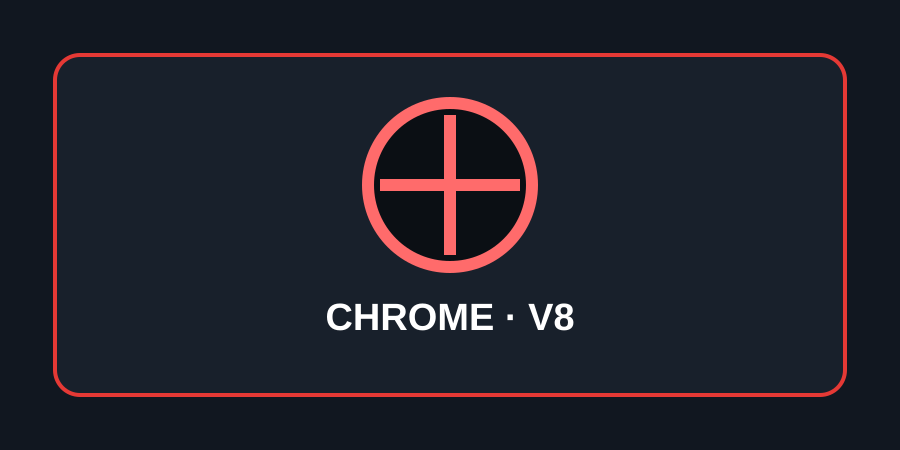
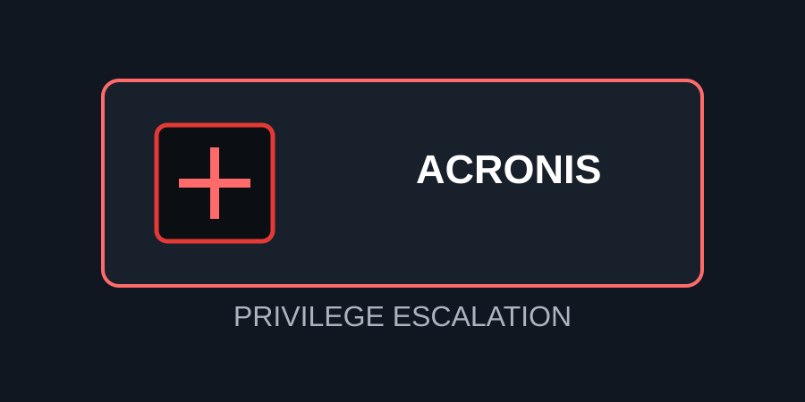
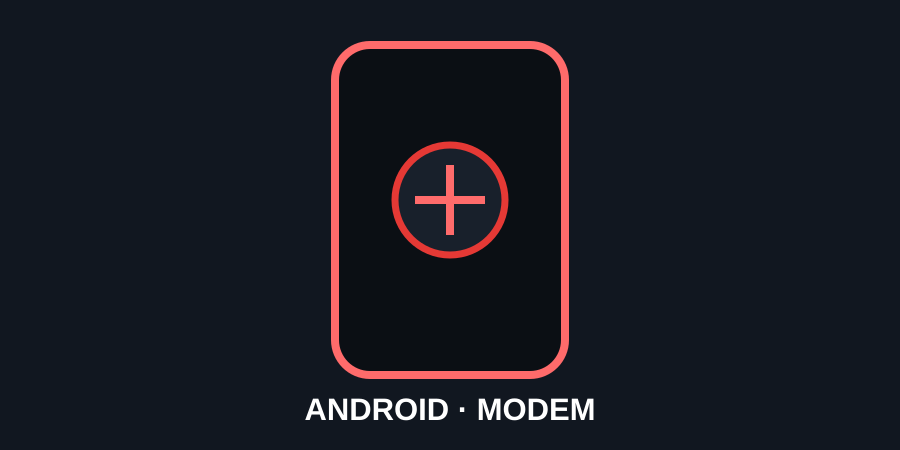

Google Chrome / V8
Vulnerabilidad de confusión de tipos en V8. NVD registra que afecta a Chrome anterior a 152.0.7977.82 y permite ejecución de código mediante una página web especialmente creada.
Ver CVE en NVDVulnAlert presenta información resumida sobre vulnerabilidades CVE recientes, sus productos afectados, impacto y medidas de actualización. La información se basa principalmente en registros públicos de NVD/CISA y fuentes de fabricantes.

Vulnerabilidad de confusión de tipos en V8. NVD registra que afecta a Chrome anterior a 152.0.7977.82 y permite ejecución de código mediante una página web especialmente creada.
Ver CVE en NVD
Escalada local de privilegios causada por permisos de archivos inseguros en complementos de Acronis Backup para cPanel/WHM, Plesk y DirectAdmin sobre Linux.
Ver CVE en NVD
Google describe un posible bypass de permisos por un error lógico en el módem celular, con posibilidad de escalada de privilegios desde un vector de red adyacente.
Ver CVE en NVDUna vulnerabilidad es una debilidad en un producto, sistema o componente que puede permitir que un atacante afecte la confidencialidad, integridad o disponibilidad de información o servicios.
El identificador CVE permite referirse de forma estandarizada a vulnerabilidades conocidas. NVD añade información técnica, productos afectados y métricas cuando están disponibles.
| CVE | Producto | Tipo | Dato clave |
|---|---|---|---|
| CVE-2026-85046 | Chrome / V8 | CWE-843 | Type confusion; ejecución de código dentro del sandbox mediante contenido web creado para activar el fallo. |
| CVE-2026-87886 | Acronis Backup | CWE-276 | Escalada local de privilegios por permisos inseguros. |
| CVE-2026-58704 | Android / Cellular Modem | CWE-285 / CWE-693 | Bypass de permisos y posible escalada de privilegios. |
Audio de apoyo incluido en el proyecto.